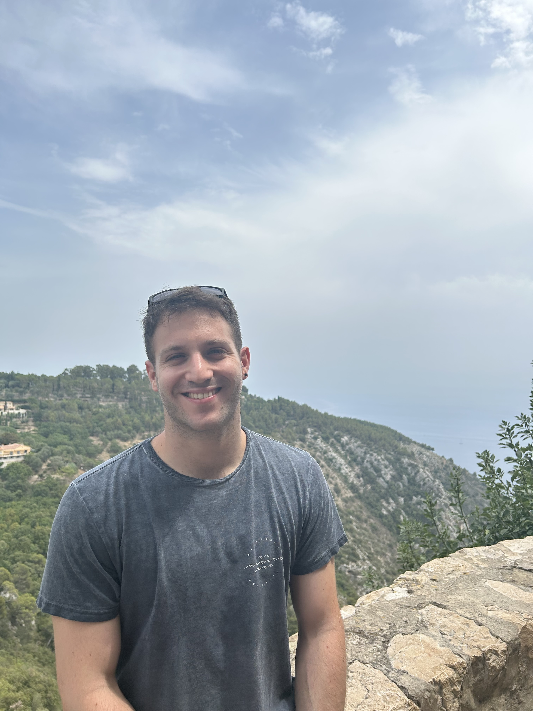
Doron Haviv
Machine Learning Scientist · Genentech BRAID
I am Doron דורון (means ‘gift’ in Hebrew), a machine learning scientist at Genentech, working in BRAID on AI models for genomics. Before that, I was a PhD candidate at the Dana Pe’er Lab at Memorial Sloan Kettering Cancer Center, through Cornell University’s PhD program in Computational Biology. My research mainly revolves around optimal transport & spatial transcriptomics.
I studied Physics and Electrical Engineering at Technion, and graduated with two degrees in 2018 when I was 19 years old. My undergraduate thesis was published at ICML 2019.
I am married to the (much more talented) Cassandra Burdziak, and together we take care of our tuxedo cat Terry in NYC.
I have lived across three continents — Israel, Australia, and the United States — and visited 23 countries. Outside of research I rock climb (bouldering), am an avid Soccer fan (but poor player), and an occasional reader (big Cormac McCarthy fan). I am always hunting for the best Israeli food in NYC (current favourite is 12 Chairs in Williamsburg), and have soloed Elden Ring and its DLC.
Reach me at doron.haviv12 at gmail.com
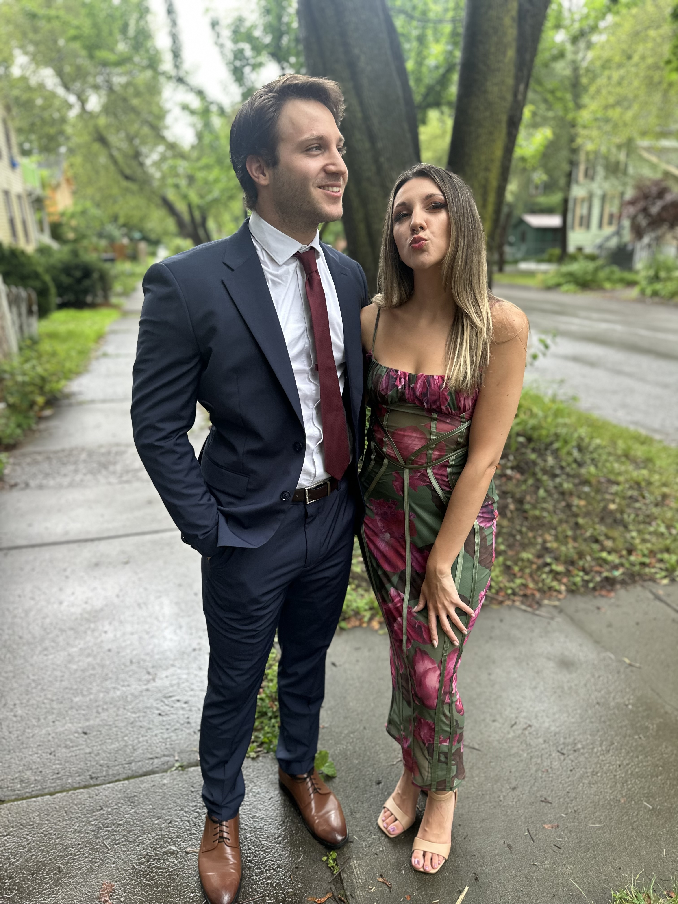

Updates
- Jun 2025 Joined Genentech as a Research Scientist in the BRAID group, working on spatial genomics and generative models.
- May 2025 Wasserstein Flow Matching accepted to ICML 2025.
- Jun 2024 The covariance environment defines cellular niches for spatial inference published in Nature Biotechnology and highlighted in a Research Briefing.
Publications
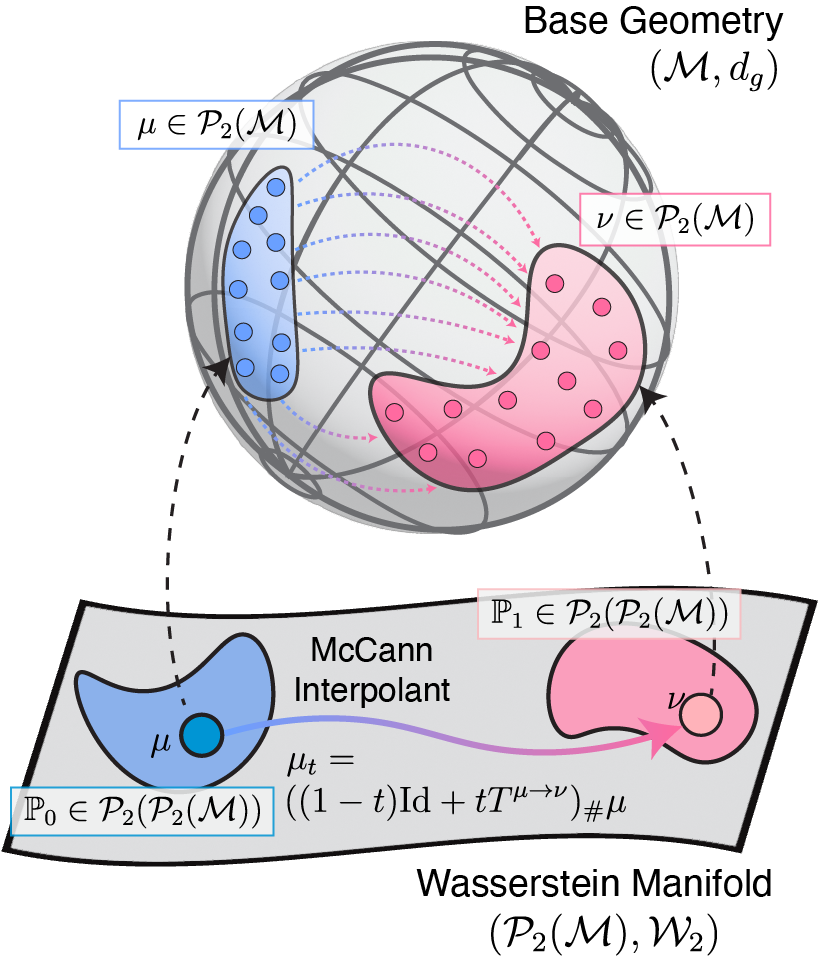
When Riemann flows with Wasserstein: Generative Modeling of Probability Distributions on Manifolds
In Review · 2026
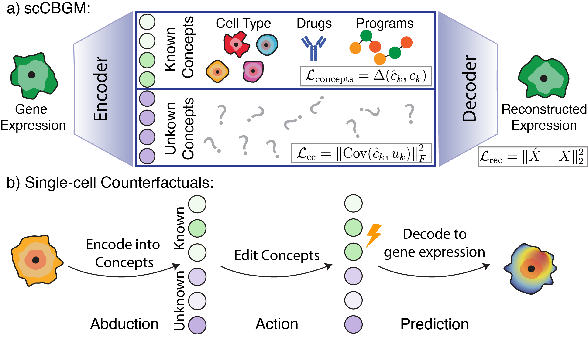
scCBGM: Single-Cell Editing via Concept Bottlenecks
In Review · 2025
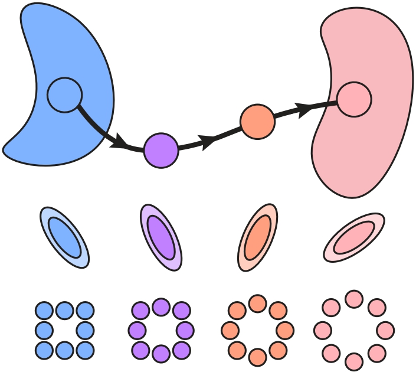
Wasserstein Flow Matching: Generative modeling over families of distributions
ICML · 2025
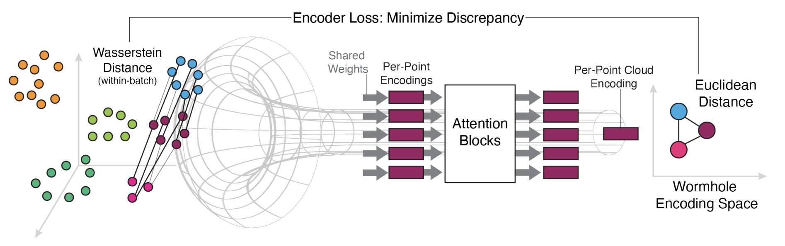
Wasserstein Wormhole: Scalable Optimal Transport Distance with Transformers
ICML · 2024
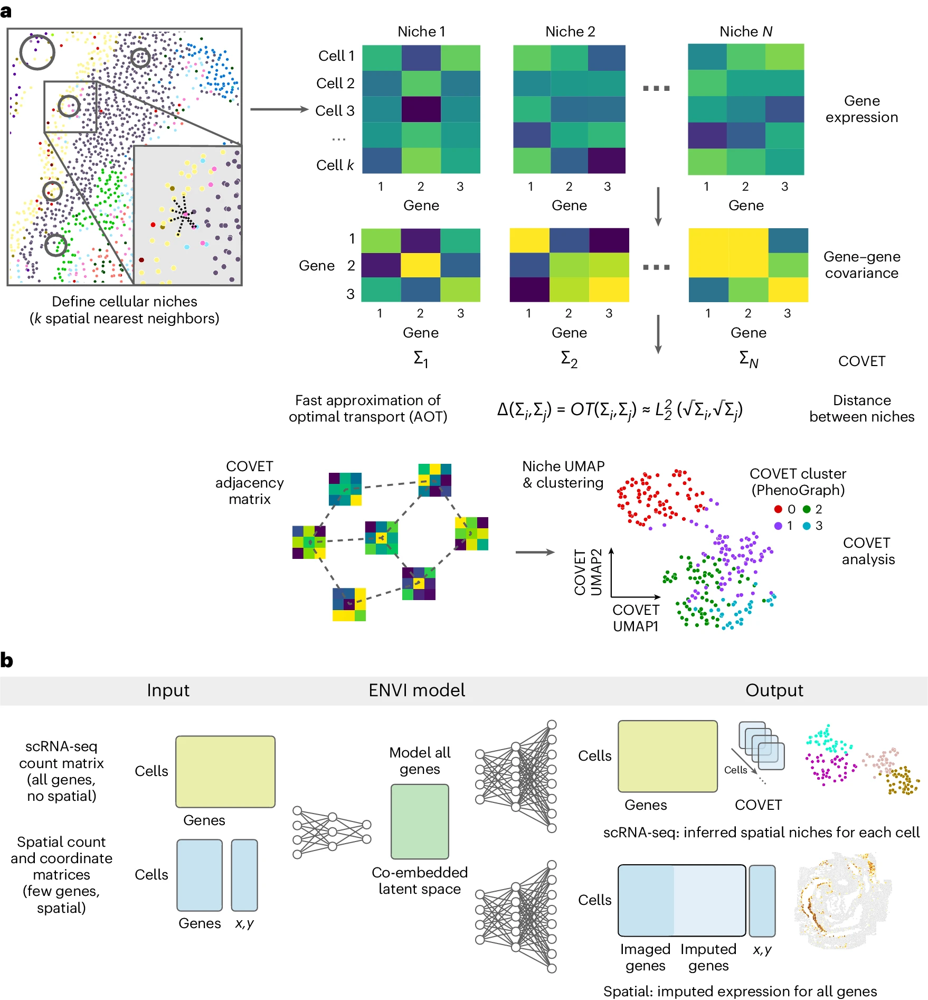
The covariance environment defines cellular niches for spatial inference
Nature Biotechnology · 2024 · Highlighted in Research Briefing
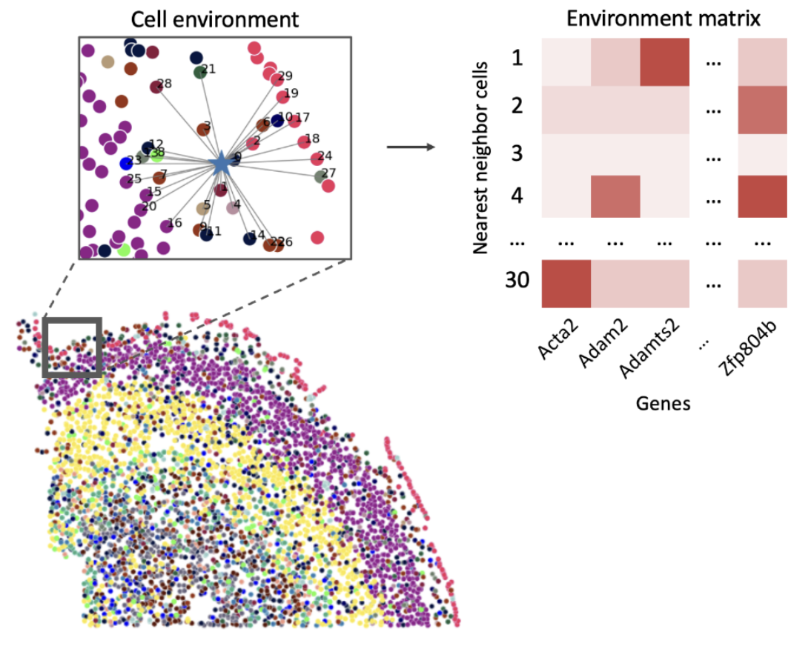
SPOT: Spatial Optimal Transport for Analyzing Cellular Microenvironments
NeurIPS Workshop on Learning Meaningful Representations of Life · 2022 · Spotlight Presentation
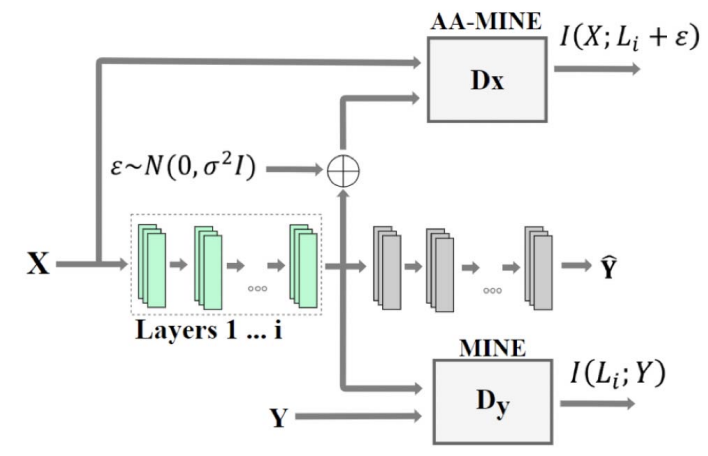
Direct validation of the information bottleneck principle for deep nets
ICCV Workshop on Statistics of Deep Learning · 2019 · Best Poster
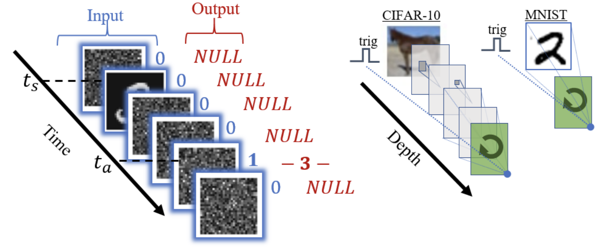
Understanding and controlling memory in recurrent neural networks
ICML · 2019
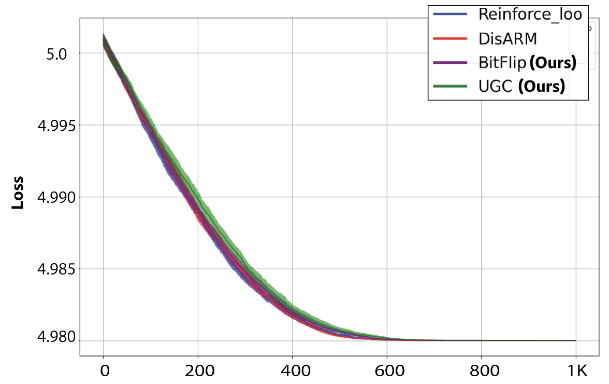
Gradient estimation for binary latent variables via gradient variance clipping
AAAI · 2023
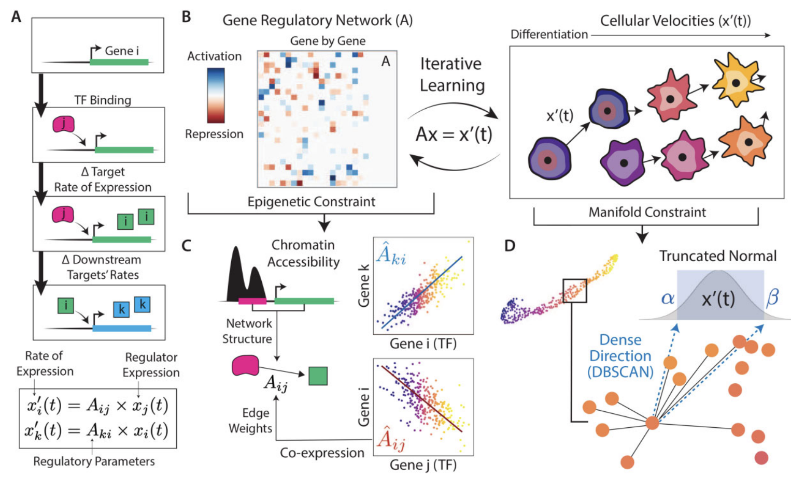
scKINETICS: inference of regulatory velocity with single-cell transcriptomics data
Bioinformatics · 2023 · Best Paper at ISMB 2023
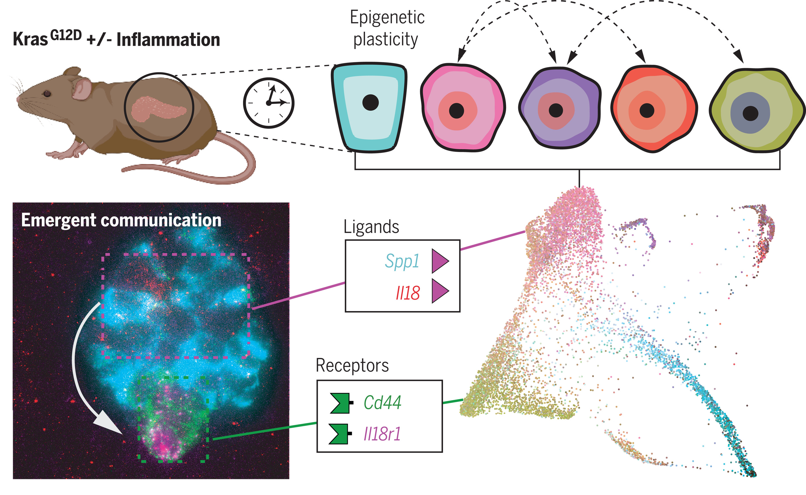
Epigenetic plasticity cooperates with cell-cell interactions to direct pancreatic tumorigenesis
Science · 2023 · Highlighted in: Cancer Discovery, Nature Reviews GI & Hepatology, Cell Trends in Cancer
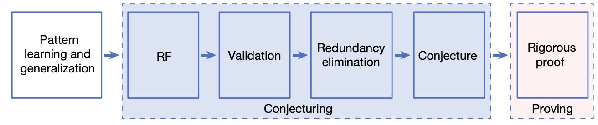
Generating conjectures on fundamental constants with the Ramanujan Machine
Nature · 2021